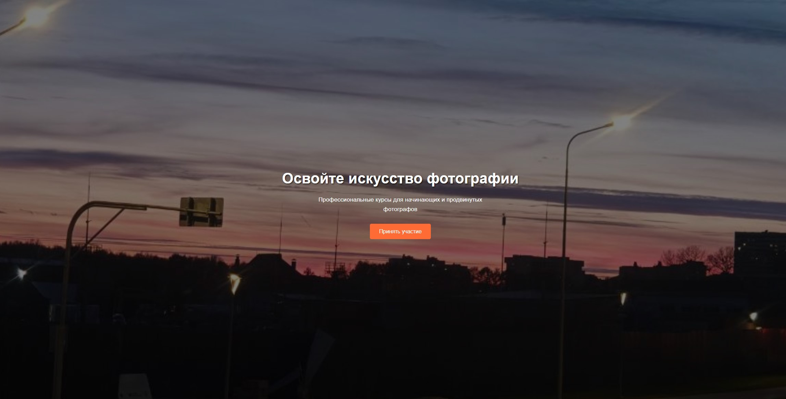
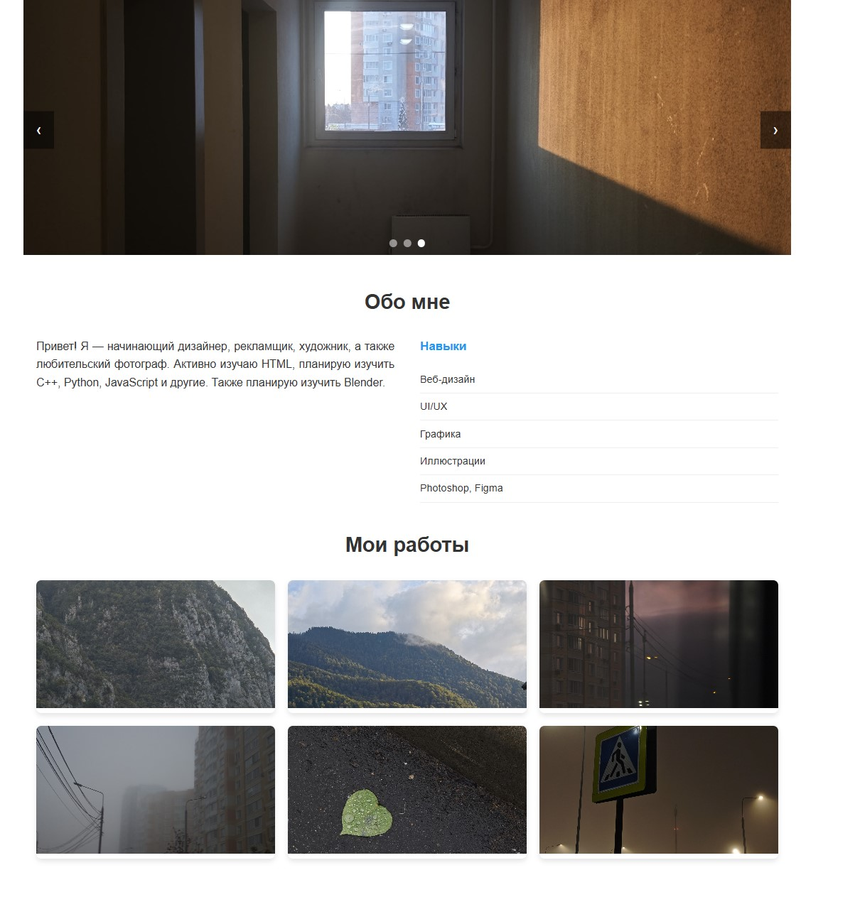
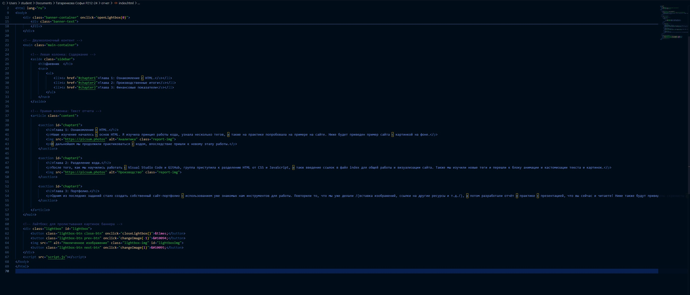
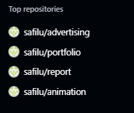
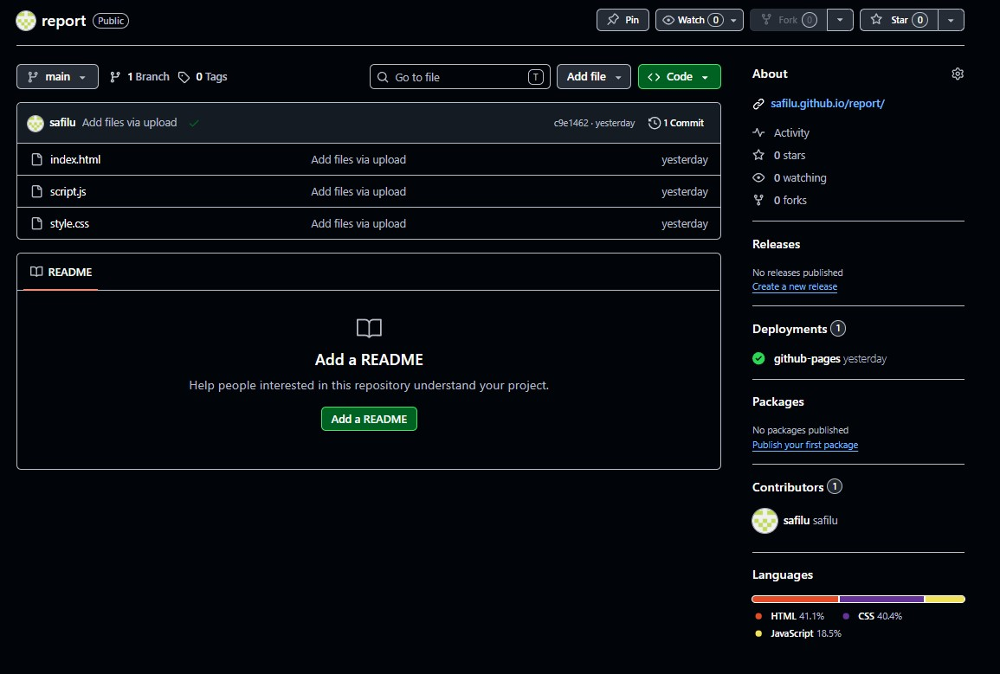

Глава 1: Ознакомление с HTML
Наше изучение началось с основ HTML. Я изучила принцип работы кода, узнала несколько тегов, а также на практике попробовала на примере на сайте. Ниже будет приведен пример сайта с картинкой на фоне.

В дальнейшем мы продолжили практиковаться с кодом, впоследствие пришли к новому этапу работы.
Глава 2: Разделение кода
После того, как мы научились работать с Visual Studio Code и GitHub, группа приступила к разделению HTML от CSS и JavaScript, а такж введение ссылок в файл index для общей работы и визуализации сайта. Также мы изучили новые теги и перешли к блоку анимации и кастомизации текста и картинок.

Глава 3: Портфолио
Одним из последних заданий стало создать собственный сайт-портфолио с использованием уже знакомых нам инструментов для работы. Повторили то, что мы уже делали (вставка изображений, ссылки на другие ресурсы и т.д.), а потом разработали отчёт о практике с презентацией, что вы сейчас и читаете! Ниже также будут приведены скриншоты с примерами работ на практике.

Ниже представлены примеры так называемых репозиториев ГитХаба.
А вот так выглядит основная страница текущего репозитория (если присмотреться на название сайта, на котором вы сейчас находитесь, то видно ссылку github, куда и выгружаются работы в общий доступ с возможностью редактировать и править код и многое другое!)
